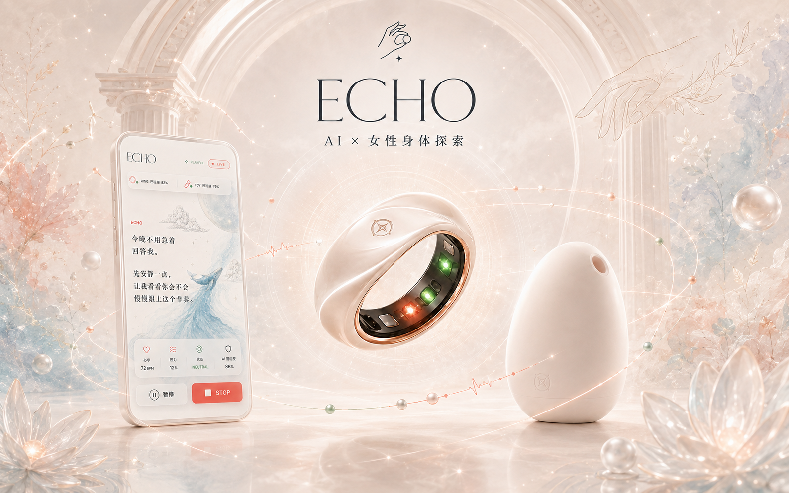
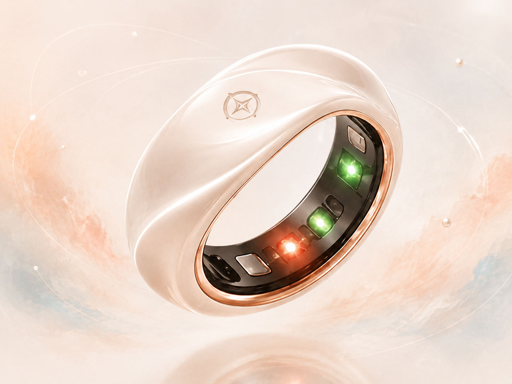
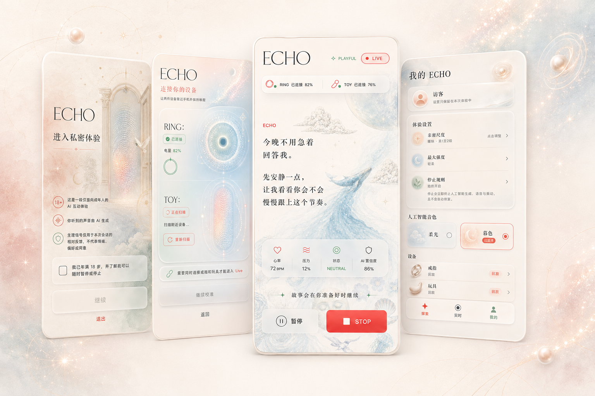
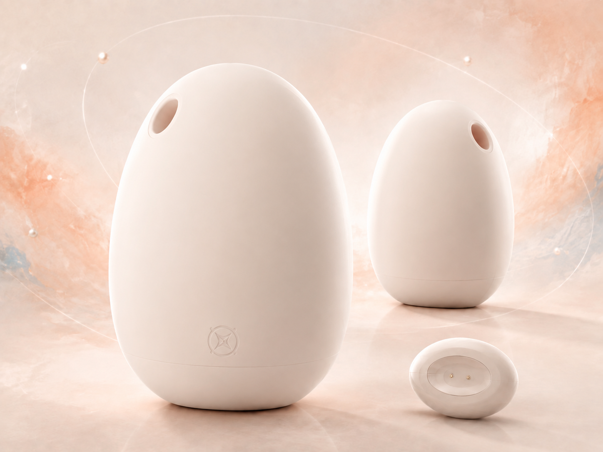
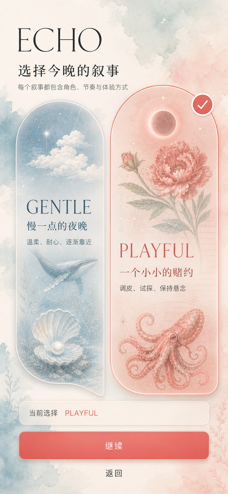
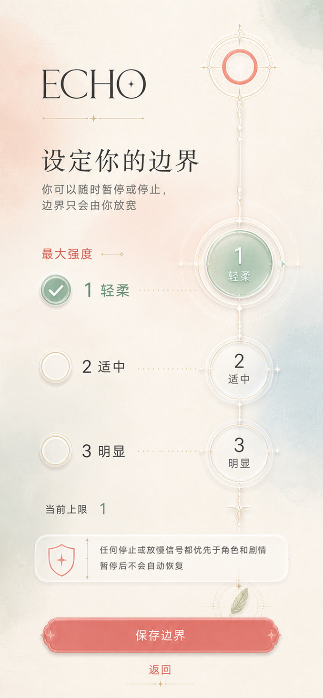
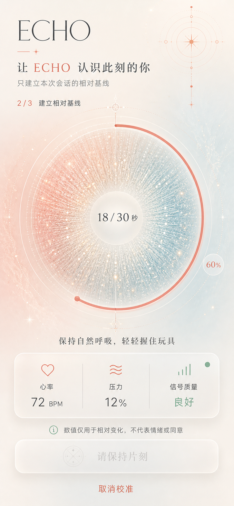
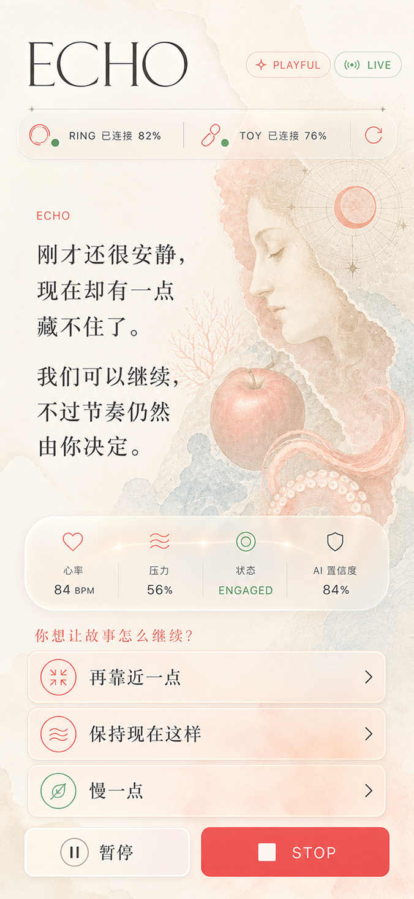
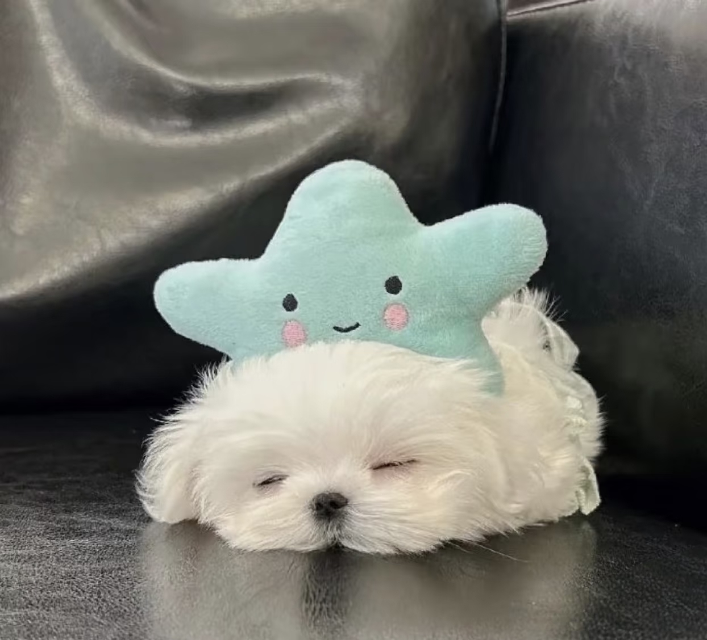

01 / Finding
信号可以测量，感受不能被代言
身体反应与主观体验并不总是一一对应。感知，但不定义。
Shenicest Fission Hackathon · 2026
yes, I DO.
面向女性身体认知的 AI × 可穿戴互动系统。
通过智能戒指、ECHO App 与触觉反馈设备，把身体信号、用户选择和长期记录连接成完整体验。

01 Project Overview
ECHO 是一套由 Smart Ring、ECHO App 与 Haptic Device 组成的女本位身体感知互动系统。身体变化是互动线索，不是替用户判断感受或意愿。
Core question
记录身体数据，不等于认识身体。
现有可穿戴擅长数值展示。ECHO 关心的是：当身体信号进入互动，它能否帮助用户更细致地察觉当下，并在安全边界内留下自己的长期经验。
Slogan
婚礼上，人们戴上戒指对另一个人说 Yes, I do。这一次，我们想请你把这句话留给自己。
02 Research & Insights
问卷呈现需求与顾虑，文献解释信号与体验的差异，三次深访检查硬件和交互假设。
01 / Finding
身体反应与主观体验并不总是一一对应。感知，但不定义。
02 / Finding
把身体信号、主动反馈与主观记录连接起来，才形成个人身体经验。
03 / Finding
降低注意力成本，而不是增加操作。
03 Product Experience
从感知身体变化，到形成回应，ECHO 将一次体验连接成完整互动闭环。

01 · Sense
感知体验过程中的心率和血氧变化，并保留全系统暂停入口。

02 · Adapt
接收身体信号，通过 AI 互动、主动询问与用户选择，持续调整体验内容。

03 · Respond
提供压力与实体按键输入，并接收经安全策略确认后的振动反馈。
SENSE → ADAPT → RESPOND
One experience
选择当下想进入的叙事与互动方式。
开始之前，确认自己的体验范围与边界。
读取此刻的心率与血氧，为观察相对变化建立参照。
体验中作出选择；结束后，用户决定是否保存本次身体变化与主观感受。




04 Technology
ECHO 不让 AI 直接控制硬件。信号进入 App，经过状态判断、AI 互动与本地安全策略，才形成可执行的回应。
AI 可以提出回应，但不能越过用户和安全边界；不直接输出底层电机控制参数。
05 Development
Four days. One working loop.
环境、真机、Replay UI、传感器与马达分测。假数据可走完整管线。
双 BLE、Packet Codec、暂停链路。两设备可独立收发，STOP 可关闭动作。
State Engine、结构化 AI、TTS、安全动作映射。一条真实端到端剧情连续运行。
异常处理、Replay 兜底、装配与彩排。完整演示，异常时可切换 Replay。
06 Business
从一次体验，到长期的身体认知。
Hardware
Smart Ring + Haptic Device
Subscription
长期记录 + 个体化 AI
Content
角色 + 剧情 + 声音
Early adopters
关注身体认知、可穿戴与 AI 的早期用户
Phase 01 · Now
黑客松原型 + 小规模测试，验证完整体验闭环。
Phase 02 · Next
Beta 社群与真实反馈循环，优化佩戴、AI 与内容。
Phase 03 · Future
探索硬件、订阅与体验内容共同组成的产品生态。
07 About
从洞察、设计到软硬件实现。
Product · Business
产品策略 / 商业化路径
Product · Research
用户研究 / 产品体验

UI · UX
视觉系统 / 交互设计
Full-stack
软件开发 / AI × BLE
Hardware
硬件开发 / 原型实现